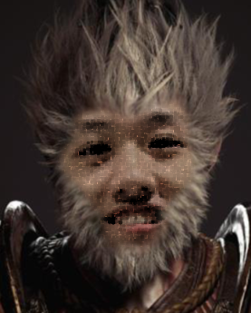

本人性格开朗，阳光热情，喜好羽毛球，摇滚乐,热爱编程，喜欢学习各种计算机语言，没事撸呆猫， 此外，我还是600小时牢猎人，怪物猎人深度玩家，老金享受者，科技护肝领域大神，主玩《怪猎暖暖》，《怪物猎人 世界》即其dlc《冰原》。 是根正苗红的猎批，盾斧宗教信徒，但在打冰原f4时不幸棍堕，倒在了黎明前的黑暗，用虫棍打完了f3，最后痛定思痛，面对粪怪 大团长时，换回了帝王冰盾斧，完成盾斧结业考试，打败了最后一只f4，自始至终，坚定地不选太刀这样的虾头武器，避免了虾头的下场。 我经历过无数次狩猎，精通各种武器的使用，无论是笛子、盾斧还是双刀虫棍，我都能游刃有余。我的狩猎风格既追求高效又注重策略， 我会根据每只怪物的特性调整装备和战术，以求达到最佳的狩猎效果。此外，我也很喜欢分享战术心得和装备搭配，帮助其他猎人提升战斗力。 如果你有任何关于《怪物猎人》的问题，无论是装备选择、怪物攻略还是战术建议，都可以随时问我，我很乐意与你分享我的狩猎经验和技巧！ 最重要的一点是我玩盾斧不上捞，联机的时候你们可以安全打桩（>0w0<） 还有一件事，本人七夕在对象的赞助下入手了优质游戏《黑神话悟空》望周知。 最后，Steam上刚入库了《千恋万花》，不知道是什么游戏捏，欢迎懂的人指教一下，Ciallo～(∠・ω< )⌒☆